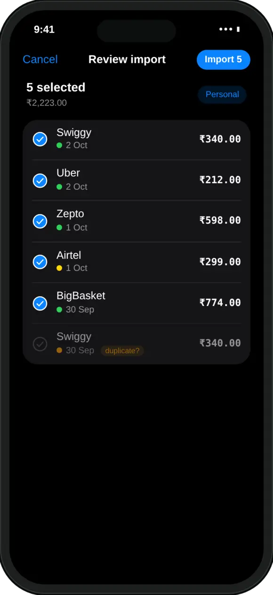

Why can’t iPhone apps read SMS?
Because iOS does not give any third-party app access to your text messages. Your SMS inbox holds OTPs, bank alerts and personal conversations, and Apple keeps it closed to apps entirely. There is no permission an expense tracker can ask for.
That is why no iPhone expense tracker, however good, can pick up bank messages in the background. If an app claims to read your SMS on iPhone, be careful about what it is really asking you to do.
How is this different from Android?
On Android, an app can ask for permission to read your SMS. Once granted, it can read your messages to find bank alerts, which is why many Indian expense trackers grew up on Android.
The trade-off is that an SMS permission is broad: the same access that reads a debit alert can read your OTPs and private messages. On iPhone you never have to make that trade, and with the right workarounds you lose very little convenience.
What are the fastest ways to track bank spending on iPhone?
There are four, and MoneyOS supports all of them. Each one is read on your iPhone and nothing is uploaded.
- Screenshot your UPI history. Open the payment history in Google Pay, PhonePe or Paytm, take screenshots, and pick up to 10 at once in MoneyOS. Every row becomes a transaction in a review list, and likely repeats are flagged.
- Paste a bank SMS. Long-press the debit message in Messages, copy it, and paste it into MoneyOS. The transaction is read out of the text for you to review.
- Share a bank email from Mail. Many banks email transaction alerts and statements. Open the email, tap Share and choose MoneyOS. A single alert is added straight away, with a duplicate check so sharing it twice never counts it twice. MoneyOS never reads your mailbox: only the message you choose.
- Import a statement. Add a CSV or PDF bank statement, including password-protected PDFs, to catch up on a whole month in one go.

Which workaround should I use?
Use screenshots for UPI, pasting or sharing for one-off payments, and statements to fill gaps. Here is how they compare:
| Method | Best for | Payments per go |
|---|---|---|
| UPI screenshots | Daily UPI spending | Many (up to 10 screenshots) |
| Paste a bank SMS | A card or bank debit you just made | One message at a time |
| Share a bank email | Alerts and statements your bank emails | One alert, or a full statement |
| CSV or PDF statement | Catching up on a missed month | A whole month |
If you only remember one thing: screenshots of your UPI history cover the most payments for the least effort. A single screenshot often holds a whole day of chai, auto and grocery payments. We walk through it step by step in how to track UPI payments without giving an app your bank login.
What is a simple routine that catches everything?
Log big spends as they happen, and import UPI screenshots once a week. That combination takes a few minutes a week and misses almost nothing.
- In the moment: type one line like “petrol 1200” or say it, or paste the bank SMS right after a card payment.
- Once a week: screenshot the last seven days in your UPI apps and import them together. Overlapping screenshots are fine because repeats are flagged.
- Once a month: if your bank emails a statement, share it to MoneyOS to fill any gaps.
Everything stays on your iPhone. MoneyOS has no account and no server, and its App Privacy label says Data Not Collected. Read more in our privacy policy or see everything MoneyOS does.
Frequently asked questions
Can any iPhone app read my bank SMS automatically?
No. iOS does not let any third-party app read your text messages. This applies to every expense tracker on iPhone, so the alternatives are screenshots, pasting a message, sharing a bank email, or importing a statement.
What is the fastest way to track UPI spending on iPhone?
Screenshot the payment history in Google Pay, PhonePe or Paytm and import the screenshots. MoneyOS reads up to 10 screenshots at once and turns every row into a transaction for you to review.
Can I paste a bank SMS into MoneyOS?
Yes. Copy the bank message and paste it into MoneyOS. It reads the transaction out of the text, and you review it before it saves.
Does MoneyOS read my email?
No. MoneyOS never reads your mailbox. You choose a bank alert or statement email and share it to MoneyOS from Mail, and only that message is read, on your iPhone.
What happens if I share the same bank alert twice?
A single shared alert is added straight away, with a duplicate check so sharing the same alert again does not count it twice. Statements with several transactions go to a review list first.
Is MoneyOS free?
Yes. The whole app is free, with no subscription, no ads and no in-app purchases.